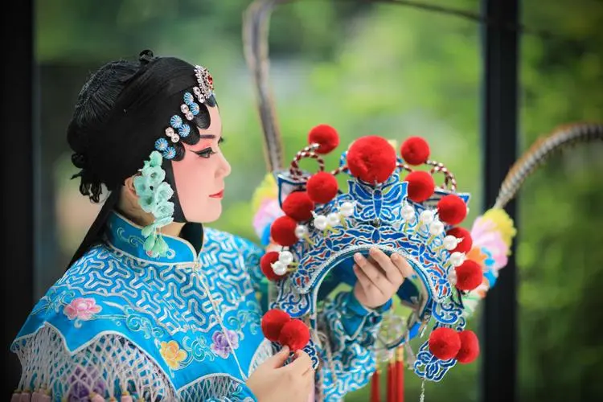
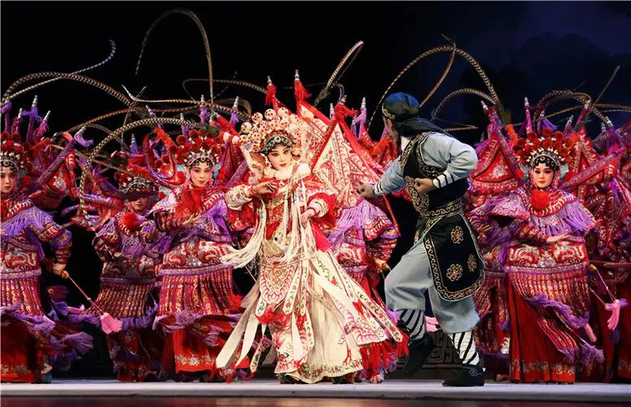
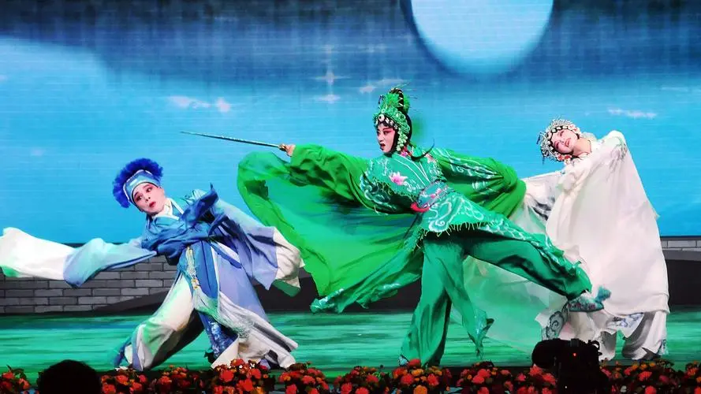

婺剧，俗称“金华戏”，浙江省地方戏曲剧种之一。它以金华地区为中心，流行于金华、衢州 [17]、丽水、临海、建德、淳安以及江西东北部的玉山、上饶、贵溪、鄱阳、景德镇等地。是高腔、昆腔、乱弹、徽戏、滩簧、时调六种声腔的合班。因金华古称婺州，1950年正名为婺剧。
明清以来，金华一带是盐、丝入赣和漆、瓷入浙的商业贸易地区，加之物产丰饶，故历来是各种戏曲争胜斗奇之地。明中叶流行的义乌腔形成于金华府（治今浙江金华）属义乌县。明末的高腔、昆腔，清初的乱弹腔，清中叶的徽戏，均曾在金华流行。
2008年6月7日，婺剧经国务院批准列入第二批国家级非物质文化遗产名录。 [2] 2019年11月，《国家级非物质文化遗产代表性项目保护单位名单》公布，江山婺剧研究院、浙江婺剧艺术研究院（浙江婺剧团）获得婺剧项目保护单位资格。
婺剧的唱腔由于长期在农村草台演出，重做轻唱，其唱腔已不如苏昆严谨，着重于感情和气氛的渲染，而不过分讲究吐字运腔的功夫，甚至有的曲牌的唱词成了“堂众曲”，各个戏中可以自由套用。
。有的曲牌如武将出场的<点将唇>，旦脚走场的<懒画眉>等，都只在乐曲中表演一番而干脆不唱了。有人认为婺剧的昆曲与弋阳武班有一定关系，它的表演、锣鼓经都与苏昆不同，而接近高腔；大花面用“滚喉”（着重喉总发声，很少用鼻腔共鸣），其曲牌旋律亦与苏昆略异，装饰较少。 婺剧的唱腔主要由二凡、三五七两类。二凡用小唢呐或笛子（曲笛）以及板胡为主要伴奏乐器，并配以“牛腿琴”（又称“金刚腿”，形似柳叶琴）。唱时以枣木（两段六、七市寸长的木棍）与檀木梆击节，过门往往加快一倍。二凡有正板、流水、紧皮（散板）等板式。正板按宫调分为尺字二凡（1=C）、正宫二凡（1=G）两种，尺字二凡又按第一分句的落音不同，分为六字、尺字、伍字、仕字四种样式。一般地说，尺字二凡激越豪放，正宫二凡雄壮悲怆。三五七以笛子（曲笛）和板胡为主要伴奏乐器，有快、中、慢和高调、正宫之分。它是由曲牌体向板腔体过渡的唱腔，曲调流丽、清柔、婉转。乱弹戏抒情性强，欢快处唱三五七，激动愤慨时唱二凡，一戏两腔配合使用。 [8]
婺剧，拥有六大声腔，音乐丰富，旋律优美，涌现出过许多具有相当造诣的艺术家与名艺人，分别在生、旦、净、末、丑等诸行当上，根据各自的嗓音条件，摸索出其优势所在，去发展、去争取自己的观众群。。 已故的叶阿苟、李朝梭先生是婺剧界的名老生，他们一个其声高，一个其音亮，低声似可穿越山谷，高音则如冲入云端，声音特具穿透力和震撼力，素有铜喉铁嗓的美誉。观众称赞：“听他们唱的[慢都子]啊，字字灵清，句句称心，听一百遍都勿嫌多，比吃红烧肉还过瘾！”最为可贵的是他们塑造了各自行当相对固定的旋律走向和音型特征，由于特点明显，唱念俱佳，故在观众中享有极高的声望。其代表作品有《玉麒麟》《九件衣》《百寿图》《空城计》等。
返回上一级